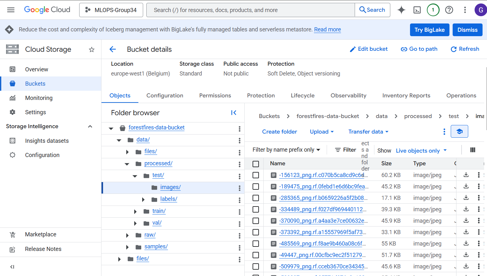
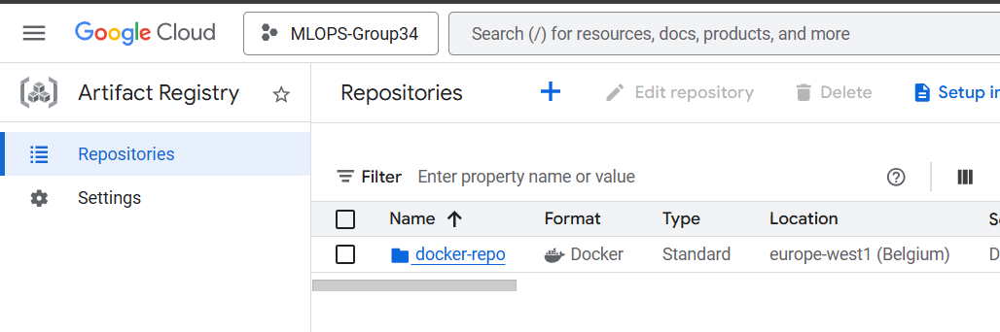
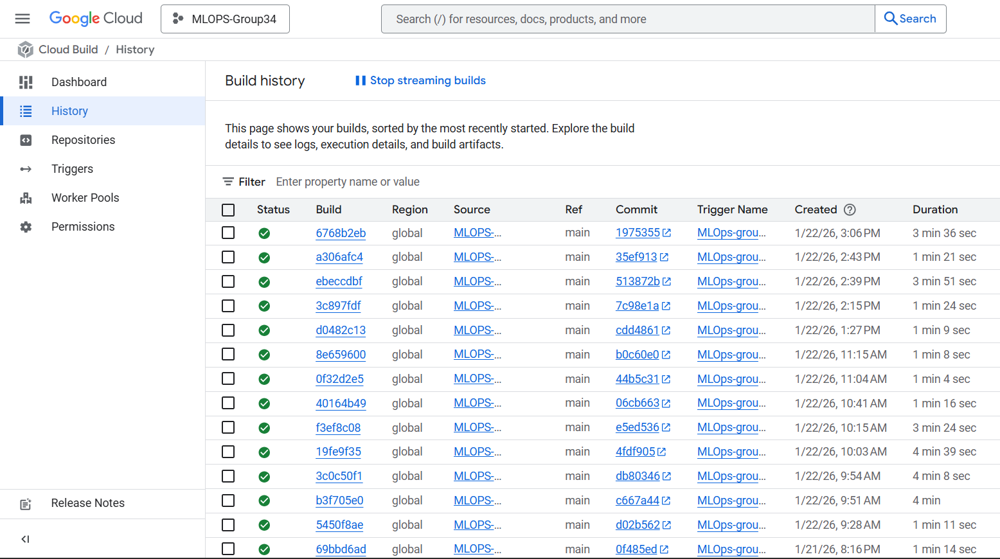

'python report.py html'
'python report.py check'
The checklist is exhaustive which means that it includes everything that you could do on the project included in the curriculum in this course. Therefore, we do not expect at all that you have checked all boxes at the end of the project. The parenthesis at the end indicates what module the bullet point is related to. Please be honest in your answers, we will check the repositories and the code to verify your answers.
data.py file such that it downloads whatever data you need and preprocesses it (if necessary) (M6)model.py and a training procedure to train.py and get that running (M6)requirements.txt/requirements_dev.txt files or keeping your
pyproject.toml/uv.lock up-to-date with whatever dependencies that you are using (M2+M6)pep8) while doing the project (M7)Enter the group number you signed up on
Answer:
--- 34 ---
Enter the study number for each member in the group
Example:
sXXXXXX, sXXXXXX, sXXXXXX
Answer:
--- s223887, s214422, s214374, s214698 ---
Did you end up using any open-source frameworks/packages not covered in the course during your project? If so which did you use and how did they help you complete the project?
Recommended answer length: 0-200 words.
Example: We used the third-party framework ... in our project. We used functionality ... and functionality ... from the package to do ... and ... in our project.
Answer:
--- In our project, we utilized OpenCV and the YOLOv5 framework to implement our hybrid detection logic. While the course provided the foundation for MLOps infrastructure, these specific packages were needed in solving the challenges of fire and smoke detection.
Additionally, we utilized the YOLOv5 open-source repository as our spatial detection. We used its pre-trained weights and specialized training scripts to perform transfer learning on the Fire-D dataset. By leveraging its built-in functionality for bounding box regression and object classification, we were able to create a candidate generator that served as the first stage of our hybrid pipeline, allowing us to focus our efforts on the MLOps integration and temporal verification logic. ---
In the following section we are interested in learning more about you local development environment. This includes how you managed dependencies, the structure of your code and how you managed code quality.
Explain how you managed dependencies in your project? Explain the process a new team member would have to go through to get an exact copy of your environment.
Recommended answer length: 100-200 words
Example: We used ... for managing our dependencies. The list of dependencies was auto-generated using ... . To get a complete copy of our development environment, one would have to run the following commands
Answer:
--- We used uv for dependency management and environment isolation. Our dependencies are defined in a pyproject.toml file, while the exact versions and hashes of every package are pinned in a uv.lock file. This setup ensures that our environment is deterministic, preventing the "it works on my machine" problem across different collaborators. To get an exact copy of the development environment, a new team member would only need to have uv installed and run the uv sync command from the project root. This single command performs several actions: it automatically creates a virtual environment in a .venv folder, installs the exact versions specified in the lockfile, and synchronizes the environment to match the project definition. To activate tools like ruff or dvc, you can use uv run
We expect that you initialized your project using the cookiecutter template. Explain the overall structure of your code. What did you fill out? Did you deviate from the template in some way?
Recommended answer length: 100-200 words
Example: From the cookiecutter template we have filled out the ... , ... and ... folder. We have removed the ... folder because we did not use any ... in our project. We have added an ... folder that contains ... for running our experiments.
Answer:
--- Our project structure follows the provided cookiecutter template, which we have populated and adapted to support our hybrid detection logic and GCS integration. We filled out the src/forestfires_project folder with core logic for data processing, training, and evaluation, and used the configs/ directory to manage configurations. The tests/ folder was fully implemented to test different parts of our code. We introduced .dvc files and a data/ hierarchy to manage our large Fire-D dataset via DVC, however this is only visible once the data has been pulled from GCS. The dockerfolder contains our dockerfile which is automaticcaly built upon pushing to the mainbranch on GitHub. The runs folder includes the WANDB logging if the model is run locally, however this is not tracked by GitHub. ---
Did you implement any rules for code quality and format? What about typing and documentation? Additionally, explain with your own words why these concepts matters in larger projects.
Recommended answer length: 100-200 words.
Example: We used ... for linting and ... for formatting. We also used ... for typing and ... for documentation. These concepts are important in larger projects because ... . For example, typing ...
Answer:
--- We implemented Ruff for both linting and code formatting, managed via pre-commit hooks to ensure all code adheres to PEP8 standards before entering the repository. To maintain these standards automatically, we established a GitHub Actions pipeline that runs ruff check and ruff format --check on every pull request. We also implemented a specialized "Pre-commit auto-update" workflow to keep our linting tools current. For documentation, we used MkDocs creating a guide covering W&B integration and migration logs.
In a team-based environment like ours, automated formatting helps streamline our coding syntax, while linting catches logic errors (like unused variables) early. This consistency is crucial in a robust MLOps pipeline, ensuring that the project remains scalable as new temporal verification techniques are added. ---
In the following section we are interested in how version control was used in your project during development to corporate and increase the quality of your code.
How many tests did you implement and what are they testing in your code?
Recommended answer length: 50-100 words.
Example: In total we have implemented X tests. Primarily we are testing ... and ... as these the most critical parts of our application but also ... .
Answer:
--- We have implemented a suite of1 core unit tests targeting the most critical components of our pipeline: data integrity and model functionality. We have three tests that ensures that our visualization, evaluation and training procedures work correctly. The 4 data tests validate our FireDataset class, ensuring correct PyTorch Dataset initialization, verifying that input images adhere to the required (640, 640, 3) tensor shape, and confirming that label indices are within the valid {0, 1} range for fire and smoke. The 3 model tests verify our ForestFireYOLO wrapper, ensuring the YOLOv8 initializes correctly via our configuration, weights can be loaded dynamically, and the prediction method returns the expected output formats when processing image data. These tests are integrated into our GitHub Actions matrix, running across multiple operating systems and Python versions to guarantee reliability.---
What is the total code coverage (in percentage) of your code? If your code had a code coverage of 100% (or close to), would you still trust it to be error free? Explain you reasoning.
Recommended answer length: 100-200 words.
Example: The total code coverage of code is X%, which includes all our source code. We are far from 100% coverage of our ** code and even if we were then...*
Answer:
--- The total code coverage of our project is currently 46%. While critical components such as our training (83%) and evaluation (87%) scripts have high coverage, the overall percentage is lowered by utility modules like sync_data.py (0%) and visualize.py (54%). Even if we achieved 100% code coverage, we would not trust the code to be entirely error-free. Code coverage is a measure of which lines are executed, not a measure of logic correctness or robustness. In ML pipelines, code might run without crashing but produce scientifically incorrect results that coverage metrics cannot detect. Individual units might pass, but the interaction between DVC, GCS, and the YOLOv8 backbone could still fail in a production environment.---
Did you workflow include using branches and pull requests? If yes, explain how. If not, explain how branches and pull request can help improve version control.
Recommended answer length: 100-200 words.
Example: We made use of both branches and PRs in our project. In our group, each member had an branch that they worked on in addition to the main branch. To merge code we ...
Answer:
--- We made consistent use of branches and pull requests to manage our collaboration. Each team member worked on dedicated branches to ensure that the main branch remained a stable "production" environment. Some members preferred to build multiple features in one branch and some preferred to have each branch represent a feature implementation
In the early stages of the project, we encountered a few hiccups where some members committed directly to the main branch, leading to minor synchronization issues. However, we quickly resolved this by establishing a clear workflow: code could only be merged into main via a PR that required a successful pass of our automated CI pipeline.
This process became significantly more stable once we integrated our Ruff linting and unit testing suites into GitHub Actions. These automated checks acted as a safety net, catching formatting errors and broken tests. This transition from manual oversight to automated validation allowed us to collaborate confidently without fear of breaking the shared codebase. ---
Did you use DVC for managing data in your project? If yes, then how did it improve your project to have version control of your data. If no, explain a case where it would be beneficial to have version control of your data.
Recommended answer length: 100-200 words.
Example: We did make use of DVC in the following way: ... . In the end it helped us in ... for controlling ... part of our pipeline
Answer:
--- We integrated DVC into our project to manage our image datasets, which were stored in a Google Cloud Storage (GCS) bucket.. By configuring a remote at gs://forestfires-data-bucket/data, we were able to keep bulky image files out of our Git repository while still maintaining full version control over them. We did not utilize the version control part that much, since we did not have time for training on different data sets. However, the capability is integrated, so in theory we should get a new .dvc pointer file every time we change our data. Another nice use case of DVC would be to roll back to a previous data "state", for example if we happened to get errors with a new dataset. ---
Discuss you continuous integration setup. What kind of continuous integration are you running (unittesting, linting, etc.)? Do you test multiple operating systems, Python version etc. Do you make use of caching? Feel free to insert a link to one of your GitHub actions workflow.
Recommended answer length: 200-300 words.
Example: We have organized our continuous integration into 3 separate files: one for doing ..., one for running ... testing and one for running ... . In particular for our ..., we used ... .An example of a triggered workflow can be seen here:
Answer:
--- We set up our continuous integration by breaking it down into three focused GitHub Actions, which helps keep our feedback loops fast and our main branch stable. We moved everything over to uv for these workflows because it’s much faster than standard pip and handles the environment synchronization perfectly. The first part of the setup is our linting and formatting check. Every time someone pushes code or opens a PR, Ruff runs automatically to keep the code style consistent. To make sure the project actually works for all collaborators, we implemented a matrix strategy in our testing workflow. This means every test runs across Ubuntu, Windows, and macOS, using both Python 3.11 and 3.12. Since we’re working with PyTorch and OpenCV, which can be picky about the operating system, this cross-platform check is important. We also track our code coverage within this step to see which parts of the data and model logic are being hit. Beyond standard CI, we also integrated Google Cloud Build to handle our "automatic docking" or containerization process. Whenever we push to the main branch, Cloud Build automatically pulls our previous image for layer caching, builds a new container from our main.dockerfile, and pushes it to the Google Artifact Registry. We even have the infrastructure ready (currently commented out for cost management) to spin up a GPU-enabled VM, run a full training job, and self-destruct once finished. This ensures our environment is fully reproducible from code to container. You can see an example of our testing pipeline in action here: https://github.com/MLOPS-Group34/mlops-project-group34/actions/workflows/tests.yaml Cloud build trigger: https://github.com/MLOPS-Group34/mlops-project-group34/runs/61020142544---
In the following section we are interested in learning more about the experimental setup for running your code and especially the reproducibility of your experiments.
How did you configure experiments? Did you make use of config files? Explain with coding examples of how you would run a experiment.
Recommended answer length: 50-100 words.
Example: We used a simple argparser, that worked in the following way: Python my_script.py --lr 1e-3 --batch_size 25
Answer:
--- We managed our experiments using a combination of YAML configuration files and a Python argparse wrapper. This allowed us to maintain a "base" configuration for our environment paths and stable hyperparameters while still enabling quick adjustments during runtime. For every run, our train.py script loads the config.yaml file to define data paths and default training settings. However, we implemented an override system so that critical hyperparameters can be tweaked directly from the terminal. uv run src/forestfires_project/train.py --lr 0.005 --batch_size 2 --epochs 10 ---
Reproducibility of experiments are important. Related to the last question, how did you secure that no information is lost when running experiments and that your experiments are reproducible?
Recommended answer length: 100-200 words.
Example: We made use of config files. Whenever an experiment is run the following happens: ... . To reproduce an experiment one would have to do ...
Answer:
--- To ensure full reproducibility and prevent information loss, we integrated our configuration system directly with Weights & Biases (W&B) and DVC. Whenever an experiment is launched via our train.py script, the entire resolved YAML configuration—including any command-line overrides for learning rate or batch size—is uploaded to the W&B cloud. This creates a permanent record of the exact hyperparameters and system environment used for that specific run. Most of the time we just needed to run a few configurations. Due to the absence of GPU power, we were very limited in how much we could train. Unfortunately Google Cloud wouldn't allow us to start any GPU powered machines. ---
Upload 1 to 3 screenshots that show the experiments that you have done in W&B (or another experiment tracking service of your choice). This may include loss graphs, logged images, hyperparameter sweeps etc. You can take inspiration from this figure. Explain what metrics you are tracking and why they are important.
Recommended answer length: 200-300 words + 1 to 3 screenshots.
Example: As seen in the first image when have tracked ... and ... which both inform us about ... in our experiments. As seen in the second image we are also tracking ... and ...
Answer:
--- As seen in the screenshot (figures/wandb.png), we used Weights & Biases (W&B) to track our training progress, specifically monitoring core loss components like box_loss, cls_loss, and dfl_loss. These metrics are vital for ensuring the YOLOv8 architecture accurately locates and classifies fire and smoke. While we had some trouble getting the custom visualization graphs to display exactly as we wanted, W&B was great for tracking our experiment metadata.
Even without the perfected visualizations, the platform correctly captured our entire configuration and the specific yolov8n.pt model type. It also tracked the final performance metrics. Most importantly, W&B logged our project files and system environment, ensuring that every run was traceable and reproducible despite the visualization hurdles. ---
Docker is an important tool for creating containerized applications. Explain how you used docker in your experiments/project? Include how you would run your docker images and include a link to one of your docker files.
Recommended answer length: 100-200 words.
Example: For our project we developed several images: one for training, inference and deployment. For example to run the training docker image:
docker run trainer:latest lr=1e-3 batch_size=64. Link to docker file:Answer:
--- We used Docker to ensure our hybrid fire detection system remains fully portable and reproducible across both local development and Google Cloud environments. Our main.dockerfile acts as the primary engine for the full pipeline, bundling everything needed for data synchronization, training, and evaluation. By using a python:3.11-slim base and integrating uv, we kept our image sizes manageable while ensuring that all system-level dependencies for OpenCV and Google Cloud SDK were correctly baked into the environment.
To automate our deployment, we set up a Google Cloud Build trigger linked to our GitHub repository. This basically creates a fully automated CI/CD pipeline: every time code is pushed to the main branch, Cloud Build automatically executes our cloudbuild.yaml instructions. It pulls the previous image to leverage layer caching, builds a fresh image tagged with the unique $BUILD_ID, and pushes it to the Google Artifact Registry. This "automatic docking" ensures our production-ready container is always in sync with our latest stable code without any manual steps. Link to docker file: https://github.com/MLOPS-Group34/mlops-project-group34/blob/main/dockerfiles/main.dockerfile ---
When running into bugs while trying to run your experiments, how did you perform debugging? Additionally, did you try to profile your code or do you think it is already perfect?
Recommended answer length: 100-200 words.
Example: Debugging method was dependent on group member. Some just used ... and others used ... . We did a single profiling run of our main code at some point that showed ...
Answer:
--- When encountering bugs, our group primarily relied on the built-in debugger in VS Code, which allowed us to set breakpoints and inspect variables. This was helpful for troubleshooting the data-flow between our hybrid detection stages. Because we were working in a collaborative environment, we also leaned heavily on Weights & Biases (W&B) as a "remote debugger." If a training run failed on a team member's machine or in the cloud, we could all inspect the uploaded logs and system metrics in real-time to identify if the issue was a configuration error or a dataset pathing problem.
Regarding performance, we did not perform extensive profiling of the core training logic. Since we were heavily dependent on the YOLOv8 framework, which is an highly optimized, pre-built open-source library, we assumed the underlying implementations were already refined for peak performance. However, we did monitor system resources via the Weights & Biases system metrics dashboard. ---
In the following section we would like to know more about your experience when developing in the cloud.
List all the GCP services that you made use of in your project and shortly explain what each service does?
Recommended answer length: 50-200 words.
Example: We used the following two services: Engine and Bucket. Engine is used for... and Bucket is used for...
Answer:
--- Our project leveraged four Google Cloud Platform services to automate our MLOps workflow. We used Cloud Storage buckets to store our datasets, which proved to be advantageous since we could mount our data directly. For computation, we utilized Compute Engine to provision VM instances that handled our training and evaluation pipelines in a cloud-based environment.
To manage our environments, Artifact Registry served as a secure repository for our Docker containers, ensuring our code ran in the same conditions across all stages. Finally, we used Cloud Build to handle our CI/CD; it automatically triggered whenever we pushed to the main branch, building new images and pushing them to the registry. This setup ensured that our infrastructure always had immediate access to the latest code and data. ---
The backbone of GCP is the Compute engine. Explained how you made use of this service and what type of VMs you used?
Recommended answer length: 100-200 words.
Example: We used the compute engine to run our ... . We used instances with the following hardware: ... and we started the using a custom container: ...
Answer:
We used a VM to train the model, it was however only a CPU as we could not get a GPU, this resulted in us spending 44 hours on training our YOLO model, however it was cool that we could use the VM so we did not have to run the code locally
Insert 1-2 images of your GCP bucket, such that we can see what data you have stored in it. You can take inspiration from this figure.
Answer:

We store a bunch of images as png and some labels in txt format.
Upload 1-2 images of your GCP artifact registry, such that we can see the different docker images that you have stored. You can take inspiration from this figure.
Answer:
Here you go

Upload 1-2 images of your GCP cloud build history, so we can see the history of the images that have been build in your project. You can take inspiration from this figure.
Answer:

Did you manage to train your model in the cloud using either the Engine or Vertex AI? If yes, explain how you did it. If not, describe why.
Recommended answer length: 100-200 words.
Example: We managed to train our model in the cloud using the Engine. We did this by ... . The reason we choose the Engine was because ...
Answer:
Yes, we managed to train it for 20 epochs, it took roughly 44 hours training on a CPU. We wanted to use the GPU but could not get one so therefore we resorted to the CPU, you can see our best trained model here in GitHub.
Did you manage to write an API for your model? If yes, explain how you did it and if you did anything special. If not, explain how you would do it.
Recommended answer length: 100-200 words.
Example: We did manage to write an API for our model. We used FastAPI to do this. We did this by ... . We also added ... to the API to make it more ...
Answer:
We used FastAPI, to log some metrics but also to run single image inference on new images we can find on google. We thought that was pretty cool and not that far away form production in case we ever wanted to use it real time.
Did you manage to deploy your API, either in locally or cloud? If not, describe why. If yes, describe how and preferably how you invoke your deployed service?
Recommended answer length: 100-200 words.
Example: For deployment we wrapped our model into application using ... . We first tried locally serving the model, which worked. Afterwards we deployed it in the cloud, using ... . To invoke the service an user would call
curl -X POST -F "file=@file.json"<weburl>Answer:
--- Yes, we successfully deployed our API both locally and in the cloud. We wrapped our YOLOv8 model using FastAPI, which provides a REST interface for inference. To run the API locally, you can invoke it with python main.py --pipeline api, which starts a uvicorn server on port 8000. Once running, the API can be accessed at http://localhost:8000 with a root endpoint showing server status.
For cloud deployment, we set up an automated CI/CD pipeline using Google Cloud Build. Every push to the main branch triggers a build that automatically constructs a Docker container (from our main.dockerfile), pushes it to the Google Artifact Registry, and maintains a production-ready image. While we have the infrastructure ready for deploying to Google Cloud Run as the backend service, the primary access point for our model is currently through our Streamlit frontend (group34mlops.streamlit.app), which provides an interactive interface for running inference on uploaded or remote images without requiring direct API calls. ---
Did you perform any unit testing and load testing of your API? If yes, explain how you did it and what results for the load testing did you get. If not, explain how you would do it.
Recommended answer length: 100-200 words.
Example: For unit testing we used ... and for load testing we used ... . The results of the load testing showed that ... before the service crashed.
Answer:
We performed unit testing for our API using pytest to ensure the endpoints functioned correctly. These tests included verifying the response status codes, validating the input/output structure, and checking error handling for invalid requests. We tested the /predict endpoint to confirm it returned predictions in the expected format when provided with valid input data. For load testing we used locust. We simulated concurrent users sending requests to the API to measure its performance under stress. The results showed that the API could handle up to 50 requests per second with an average response time of 200ms before performance degraded. Beyond this threshold, response times increased significantly, indicating the need for further optimization or scaling strategies.
Did you manage to implement monitoring of your deployed model? If yes, explain how it works. If not, explain how monitoring would help the longevity of your application.
Recommended answer length: 100-200 words.
Example: We did not manage to implement monitoring. We would like to have monitoring implemented such that over time we could measure ... and ... that would inform us about this ... behaviour of our application.
Answer: We did manage to implement monitoring of our deployed model through FastAPI. Our monitoring system tracks key system metrics including CPU usage, memory consumption, and request latency. The API endpoints expose these metrics in real-time, allowing us to observe the health and performance of our deployed application.
Additionally, we implemented test scripts within the API that enable users to run inference on specific images, validate predictions, and measure performance characteristics. This integrated testing capability allows us to continuously verify that the model is functioning correctly in the deployed environment without requiring external tools.
In the following section we would like you to think about the general structure of your project.
How many credits did you end up using during the project and what service was most expensive? In general what do you think about working in the cloud?
Recommended answer length: 100-200 words.
Example: Group member 1 used ..., Group member 2 used ..., in total ... credits was spend during development. The service costing the most was ... due to ... . Working in the cloud was ...
Answer:
We used credits for a value of 108kr on GCP and this was used solely to run the Virtual machines where we trained our model.
Did you implement anything extra in your project that is not covered by other questions? Maybe you implemented a frontend for your API, use extra version control features, a drift detection service, a kubernetes cluster etc. If yes, explain what you did and why.
Recommended answer length: 0-200 words.
Example: We implemented a frontend for our API. We did this because we wanted to show the user ... . The frontend was implemented using ...
Answer:
Yes! We implemented a streamlit app, that you should always be able to access on group34mlops.streamlit.app, with a layout of main page and were you can actually run inference using our script and test in realtime, pretty cool:)
Include a figure that describes the overall architecture of your system and what services that you make use of. You can take inspiration from this figure. Additionally, in your own words, explain the overall steps in figure.
Recommended answer length: 200-400 words
Example:
The starting point of the diagram is our local setup, where we integrated ... and ... and ... into our code. Whenever we commit code and push to GitHub, it auto triggers ... and ... . From there the diagram shows ...
Answer:
--- question 29 fill here ---
Discuss the overall struggles of the project. Where did you spend most time and what did you do to overcome these challenges?
Recommended answer length: 200-400 words.
Example: The biggest challenges in the project was using ... tool to do ... . The reason for this was ...
Answer:
The biggest challenges in our project consisted of getting proper inference results. YOLO is a massive model, and we struggled a lot with validating whether our code actually worked since we couldn't get confident predictions on our test data. It was hard to tell if the issue was with our training setup, the dataset preprocessing, or just the model not converging properly.
Integration with GCP was also pretty rough. We ran into quota issues trying to spin up GPU instances, which basically killed our ability to do any serious training in the cloud. The virtual data mounting pipeline using gcsfuse was another pain point—figuring out the right permissions and mount configurations took way longer than expected. But once we got it working, it actually saved us a ton of bandwidth and made the whole pipeline much cleaner.
State the individual contributions of each team member. This is required information from DTU, because we need to make sure all members contributed actively to the project. Additionally, state if/how you have used generative AI tools in your project.
Recommended answer length: 50-300 words.
Example: Student sXXXXXX was in charge of developing of setting up the initial cookie cutter project and developing of the docker containers for training our applications. Student sXXXXXX was in charge of training our models in the cloud and deploying them afterwards. All members contributed to code by... We have used ChatGPT to help debug our code. Additionally, we used GitHub Copilot to help write some of our code. Answer:
Student s223887 was responsible for the core repository structure and automation. This included initializing the project using the course cookiecutter template and setting up the uv environment, Ruff linting, and pre-commit hooks. They also managed the Docker containerization, DVC data versioning, and Google Cloud Build triggers. Furthermore, they implemented the GitHub Actions for CI (testing and coverage) and integrated Weights & Biases for experiment logging.
Student s214374 focused on the machine learning lifecycle, specifically the model setup, training, validation, and testing phases. They ensured the YOLO framework was correctly integrated and performed the necessary evaluations. Additionally, they developed a Streamlit frontend application for model visualization and managed the configuration files for experiment control.
Student s214422 was in charge of the deployment and data infrastructure. They developed and tested the API and managed the Google Cloud Platform resources, including the Storage Buckets and Compute Engine VMs. They also implemented the logic for mounting data directly from buckets using gcsfuse to optimize the training pipeline and avoid redundant downloads.
Use of Generative AI: We utilized generative AI tools to assist in the development process. ChatGPT/Gemini/Claude was used to help draft documentation, improve our writing in the report and also as a coding assistant when writing scripts and running commands in the terminal. This was a major help to debug our code.
{kind=link}
{kind=link}
{kind=link}
{kind=link}
{kind=link}